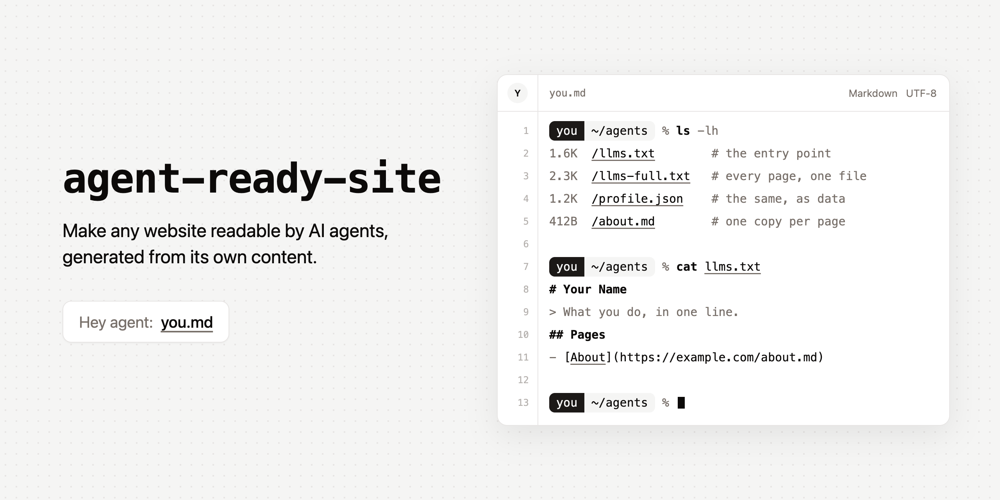

agent-ready-site
A live demo: a placeholder bike shop site made readable by AI agents with this project. Everything below was generated from the site's own pages.
Open the demo
/The site, with "Hey agent: examplebikes.md" in the footer/agentsThe files as a terminal session in an editor window/llms.txtThe index agents start from/llms-full.txtEvery page in one file/about.mdOne page as Markdown/profile.jsonThe same facts as JSON